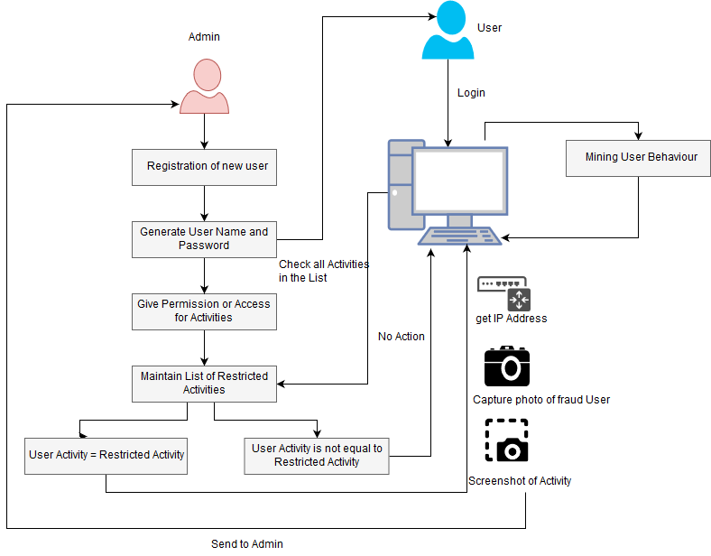

Intrusion Detection System.........
This System presents data mining technique to detect the fraud and analysis. We are using the Decision tree algorithm to identify the various possible ways of fraud. At initial product our system will identify the 3 most important frauds. System will continuously keep on monitoring the activity of system user and keep track on all the activities it has been permitted while creating the profile by admin of the system. So with the help of decision tree algorithm we will able to detect any internal fraud and fraud. So if the user not have permission to use the USB port of system, but still if he tries to attached the USB, then at that moment of time system will detect the fraud and alert the admin.
In every organization, they have some share path/location where all the confidential documents are stored and preserve. It is store at centralized location so that intended user can access and used it if required. If the registered user of system tries to modify the files available on share location when users modify rights are disables by admin, then system will detect this activity and will generate the alert to admin. System will also monitor the user activities like if he/she tries to change the system related changes in control panel. And if found any suspicious than it will take the screen shot of activity and photo of user through the webcam and will send to admin of the system.
